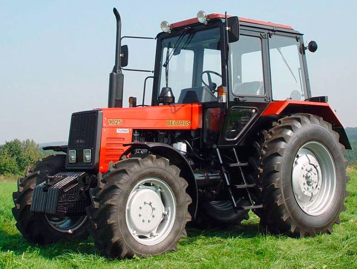

МТЗ Беларус 1025.2

МТЗ Беларус 1025.2 – це потужний повнопривідний трактор, який належить до тягового класу 2,0 і призначений для виконання широкого спектра сільськогосподарських робіт: від підготовки ґрунту до збирання врожаю та транспортних операцій. Він оснащений 4-циліндровим двигуном Д-245 із турбонаддувом, що забезпечує необхідний запас крутного моменту для роботи з комбінованими агрегатами та багатокорпусними плугами.
Головною конструктивною особливістю моделі 1025.2 є посилена трансмісія та балочний передній міст із планетарно-циліндричними редукторами. Така конструкція моста дозволяє витримувати значно більші навантаження, що робить цей трактор ідеальним для роботи з важким навісним обладнанням та фронтальними навантажувачами. Синхронізована коробка передач та посилена задня навіска з двома гідроциліндрами забезпечують високу продуктивність та точність управління в полі.
| Параметр | Значення |
|---|---|
| Клас тяги | 2.0 |
| Тип ходової частини | колісний |
| Колісна формула | 4х4 (повний привід) |
| Тип рами | напіврамна конструкція |
| Основне призначення | енергоємні сільськогосподарські роботи, оранка, посів, робота з комбінованими агрегатами та транспортні операції |
| Параметр | Значення |
|---|---|
| Модель | Д-245 |
| Тип двигуна | 4-циліндровий, дизельний, з турбонаддувом |
| Спосіб охолодження | рідинна закрита з примусовою циркуляцією |
| Розташування циліндрів | рядне, вертикальне |
| Робочий об’єм | 4,75 л |
| Діаметр поршня / Хід поршня | 110 × 125 мм |
| Номінальна потужність | 79 кВт (107 к.с.) |
| Номінальні оберти | 2200 об/хв |
| Максимальний крутний момент | 385 Н·м (при 1400 об/хв) |
| Питома витрата палива | ~229 г/кВт·год |
| Параметр | Значення |
|---|---|
| Муфта зчеплення | суха, дводискова, постійно замкнута |
| Тип КПП | механічна, синхронізована |
| Кількість передач | 16 вперед / 8 назад (схема (8+4)х2) |
| Тип реверсу | механічний (через окрему реверсну коробку) |
| Діапазон швидкостей (вперед) | 2,3 – 36,6 км/год |
| Вал відбору потужності | незалежний двошвидкісний (540 / 1000 об/хв) |
| Діапазон | Передача | Теоретична швидкість, км/год | Передаточне число (загальне) | Тягове зусилля, кН |
|---|---|---|---|---|
| І | 1 | 2,30 | 185,4 | 24,50* |
| І | 2 | 3,10 | 137,5 | 24,50* |
| І | 3 | 4,20 | 101,5 | 24,50* |
| І | 4 | 5,60 | 76,2 | 24,00 |
| ІІ | 1 | 7,10 | 60,1 | 18,90 |
| ІІ | 2 | 9,50 | 44,9 | 14,10 |
| ІІ | 3 | 12,80 | 33,3 | 10,50 |
| ІІ | 4 | 17,20 | 24,8 | 7,80 |
| ІІІ | 1 | 4,80 | 88,8 | 24,50* |
| ІІІ | 2 | 6,50 | 65,6 | 20,60 |
| ІІІ | 3 | 8,80 | 48,5 | 15,20 |
| ІІІ | 4 | 11,80 | 36,1 | 11,30 |
| IV | 1 | 15,10 | 28,3 | 8,90 |
| IV | 2 | 20,20 | 21,1 | 6,60 |
| IV | 3 | 27,20 | 15,7 | 4,90 |
| IV | 4 | 36,60 | 11,6 | 3,60 |
| Параметр | Значення |
|---|---|
| Тип коліс | пневматичні шини низького тиску |
| Колісна формула | 4х4 (повний привід) |
| Передній міст (ПВМ) | ведучий, балкового типу (з планетарно-циліндричними редукторами) |
| Типорозмір передніх шин | 360/70 R24 |
| Типорозмір задніх шин | 18.4 R34 |
| Радіус ведучого колеса (заднього) | ~0,84 м |
| Кліренс (агротехнічний просвіт) | 645 мм |
| Колія передніх коліс | 1420 – 1870 мм (регулюється) |
| Колія задніх коліс | 1400 – 2100 мм (плавне регулювання) |
| Блокування диференціалу | гідравлічне (з електрогідравлічним управлінням) |
| Рульове управління | гідрооб'ємне (ГОРУ) |
| Гальмівна система | сухі (або мокрі) тридискові гальма |
| Параметр | Значення |
|---|---|
| Під час роботи з навантаженням | 16,5 – 19,5 кг/год |
| Під час холостих переїздів | 7,0 – 8,5 кг/год |
| Під час зупинок (холостий хід) | 1,1 – 1,4 кг/год |
| Параметр | Значення |
|---|---|
| Експлуатаційна маса | 4480 кг |
| Максимальна допустима вага | 7500 кг |
| Довжина / Ширина / Висота | 4205 / 1970 / 2820 мм |
| Об’єм паливного баку | 156 л |
| Параметр | Значення |
|---|---|
| Гідравлічна система | роздільно-агрегатна, 45 л/хв |
| Вантажопідйомність навіски | 4200 кг |
| Трансмісія | посилена, з планетарними колісними редукторами заднього моста |
| Особливості | дводискове зчеплення дозволяє передавати більший крутний момент без пробуксовування муфти |